Solstickan 90 år
vad
Jubileumsask för Solstickan
när
2025
målgrupp
Tändstickskonsumenter
2026 firar Solstickan 90 år, och andra halvan av 2025 fick jag i uppdrag att designa en jubileumsask inför detta.
Från början var planen att ta fram en ask kring temat svensk sommar, men det slutade med fyra askar i retrotema, inspirerade av årets alla säsonger. Nedan syns bilder på de färdiga askarna (de första fem tillhör Solstickan Design och jag tackar ödmjukast för att jag får använda dem), samt några inblickar i designprocessen.
Den största utmaningen låg definitivt i att briefen från början i princip var “designa en jubileumsask”. Ibland kan bristen på begränsningar vara den största utmaningen av dem alla, men efter många skisser, ett flertal diskussioner med marknadsteamet, och ytterligare några skisser hittade vi slutligen rätt.
I det här projektet var jag ensam formgivare.
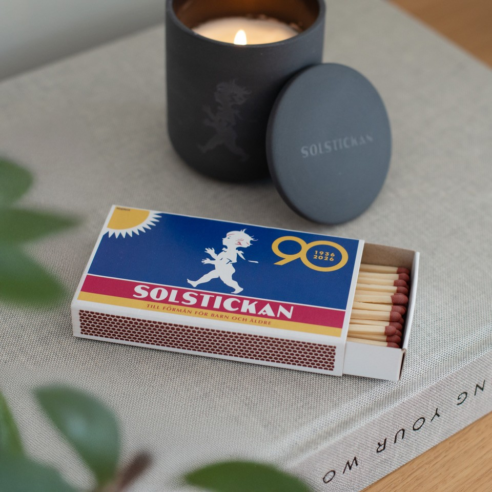

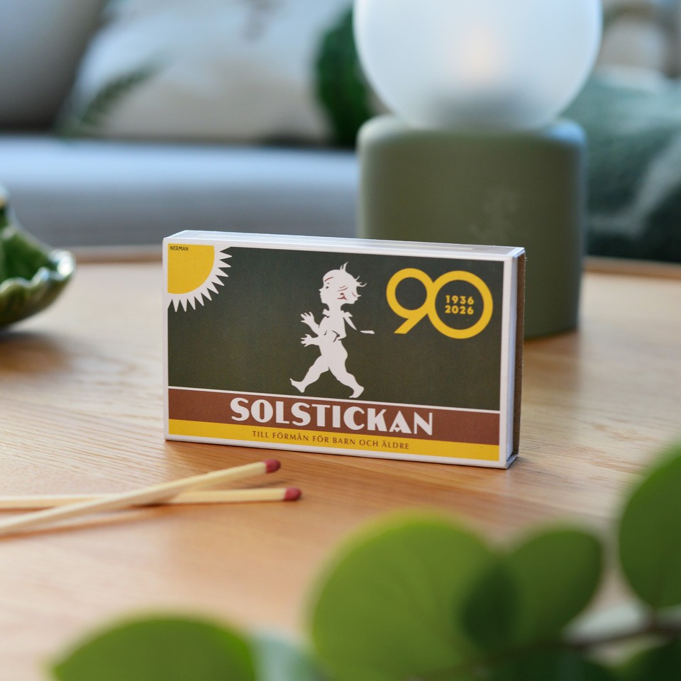
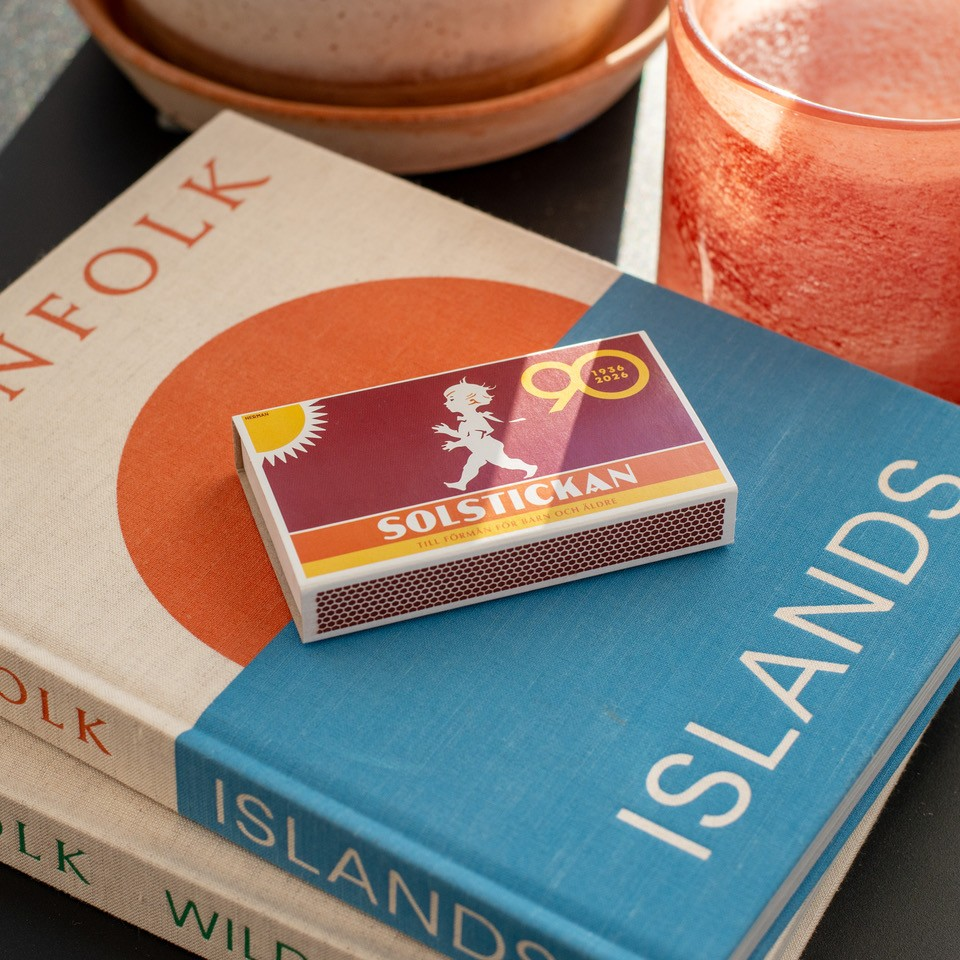
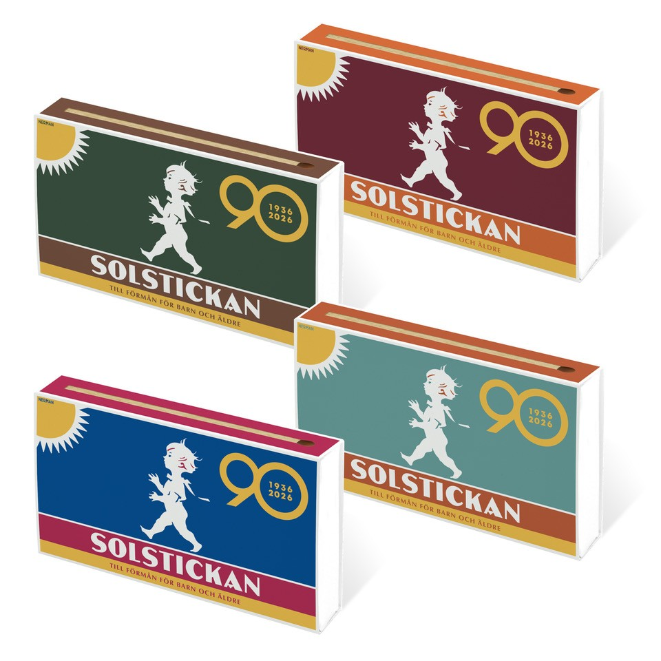
Den slutgiltiga kvartetten.
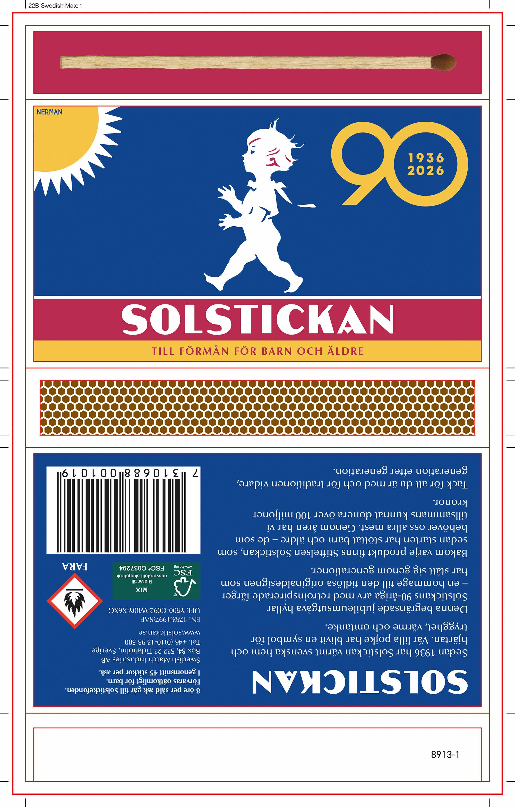
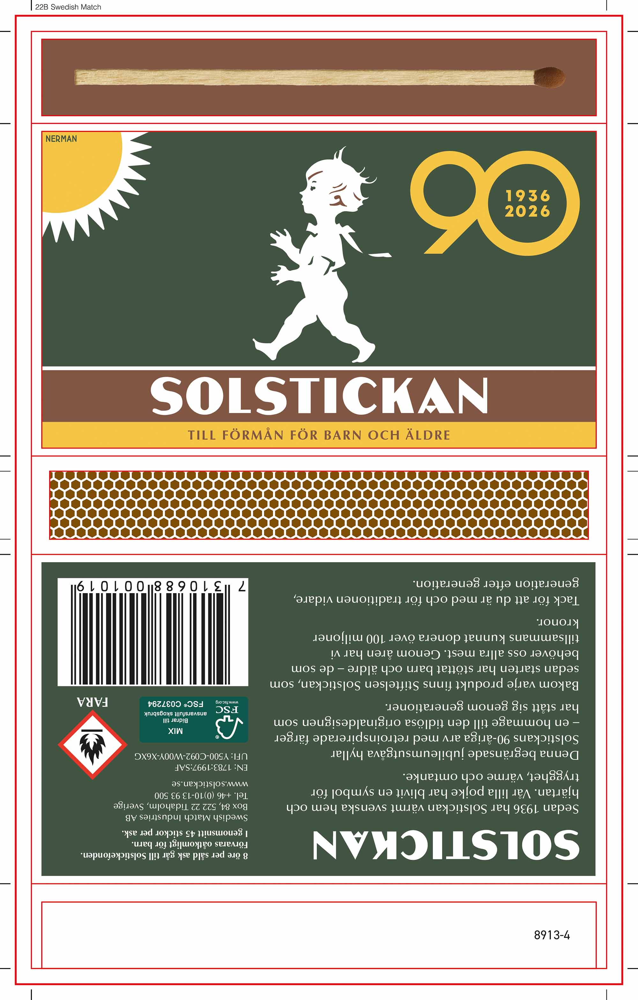
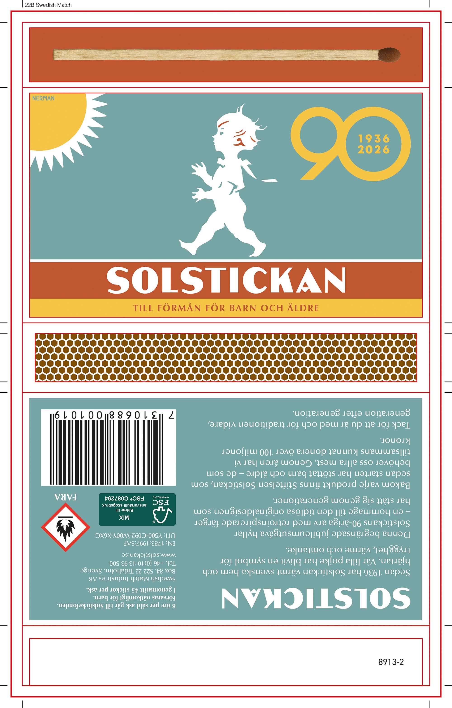
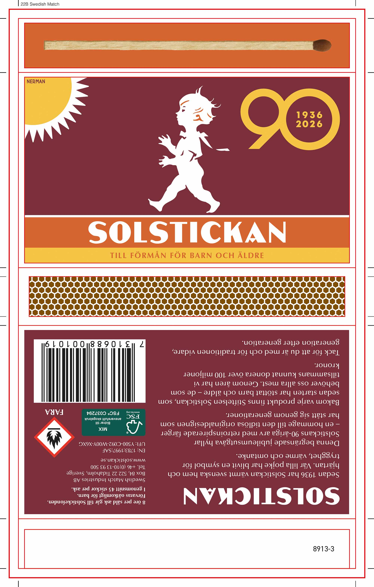
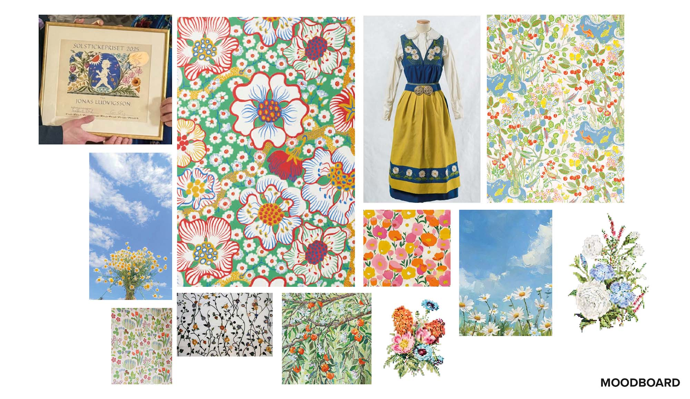
Moodboard från projektets början.
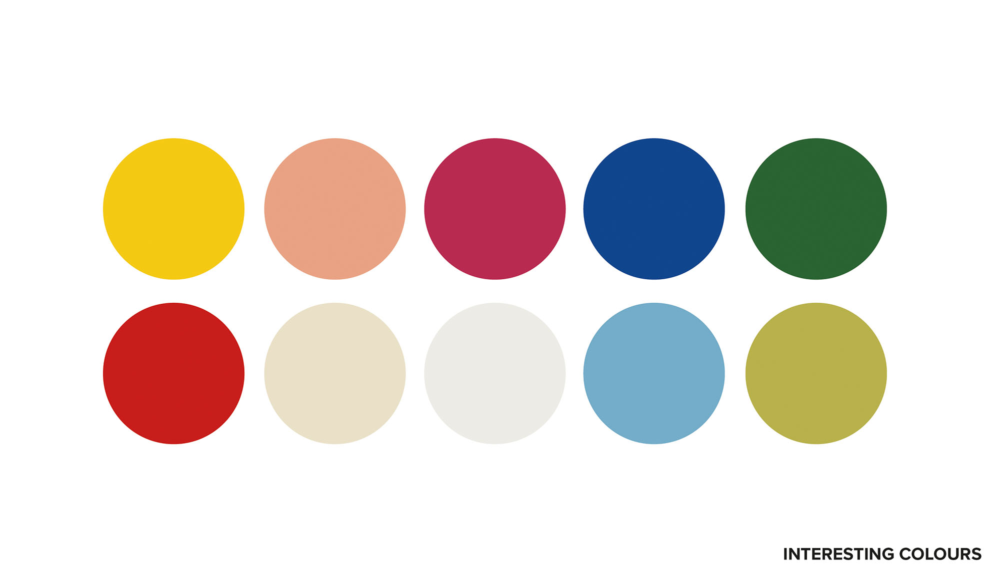
Solstickan har ju väletablerade färger, så det var kul att få möjlighet att frångå dessa.
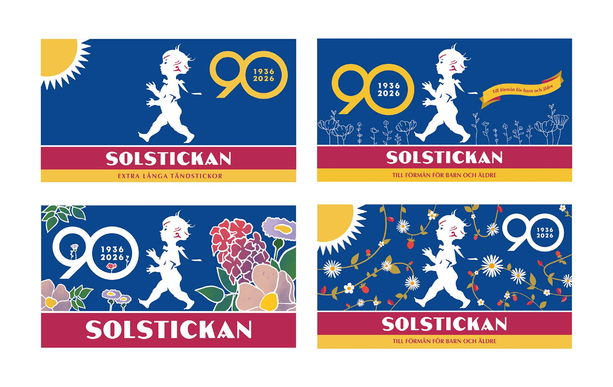
Några förslag från när det började ta form.
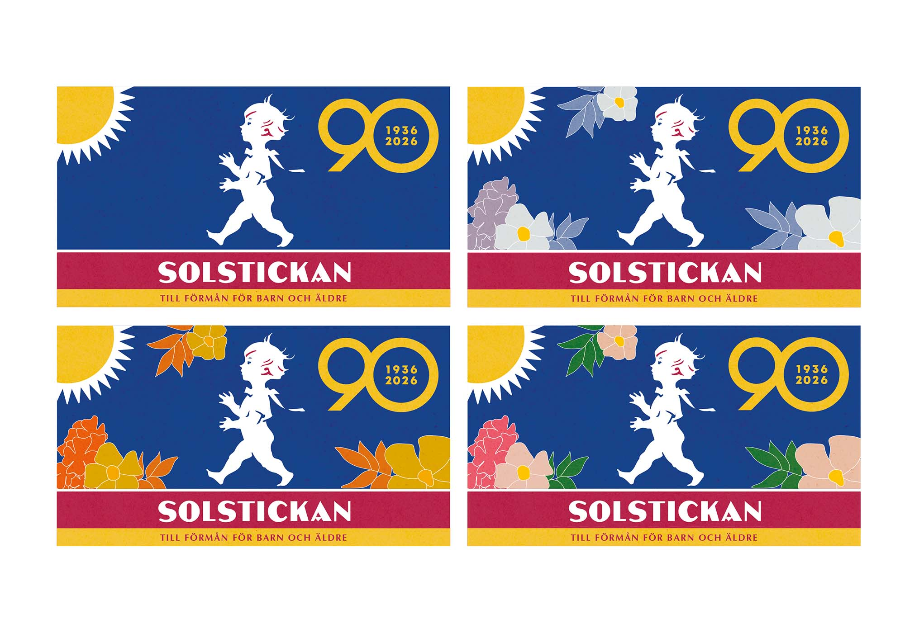
Plötsligt ville marknadsteamet ha fyra askar istället för en, och jag började då utforska hur det gick att variera det jag redan hade.
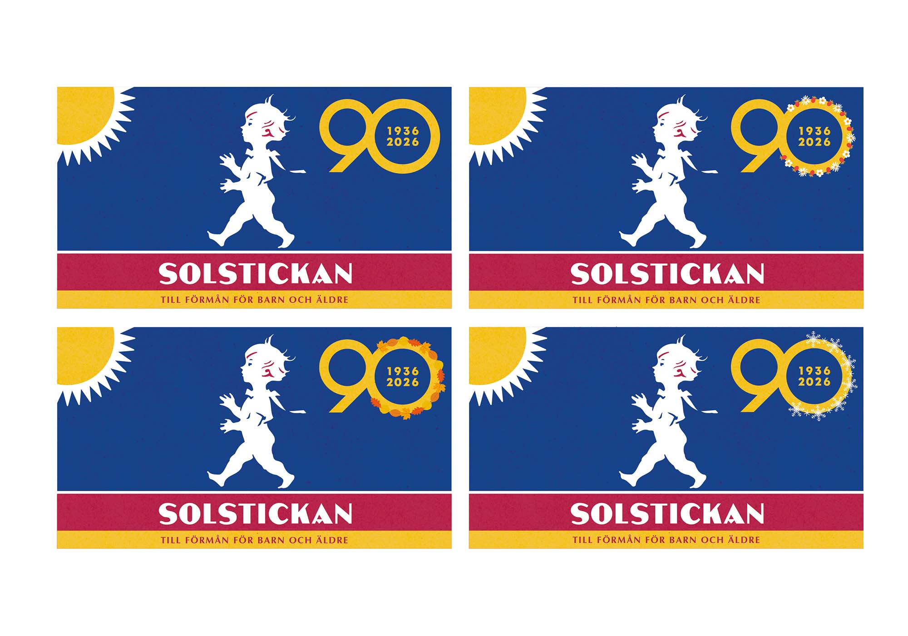
Någonting med snöflingor på en vinterask kändes lite väl klyschigt... Så scratch that.
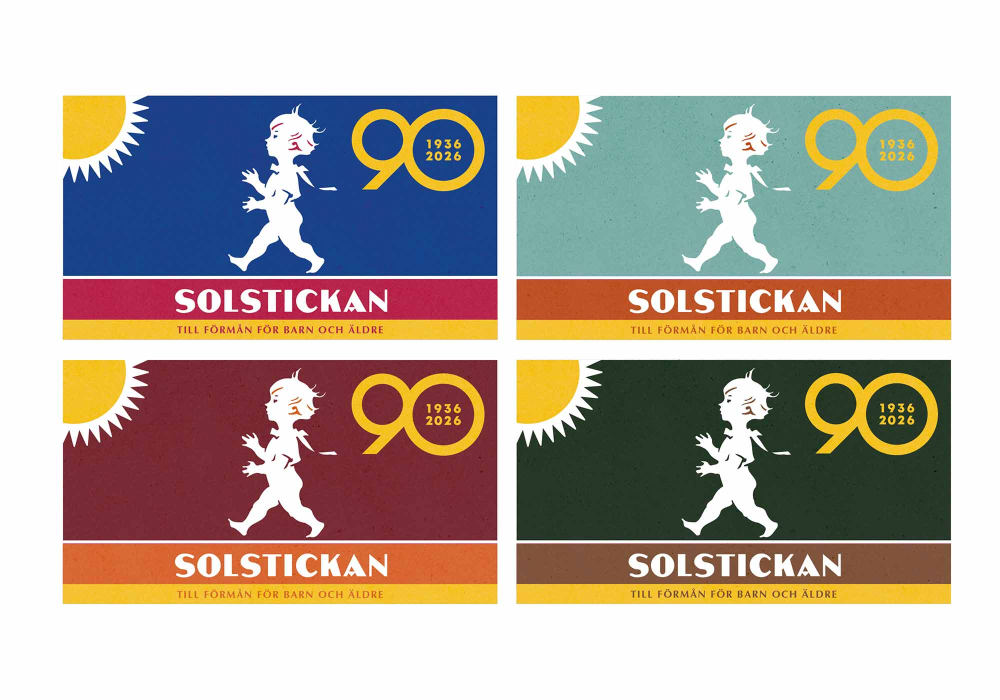
Fick idén att testa att bara variera färgerna istället för de grafiska elementen, och plötsligt hade vi en vinnare (eller ja, fyra).